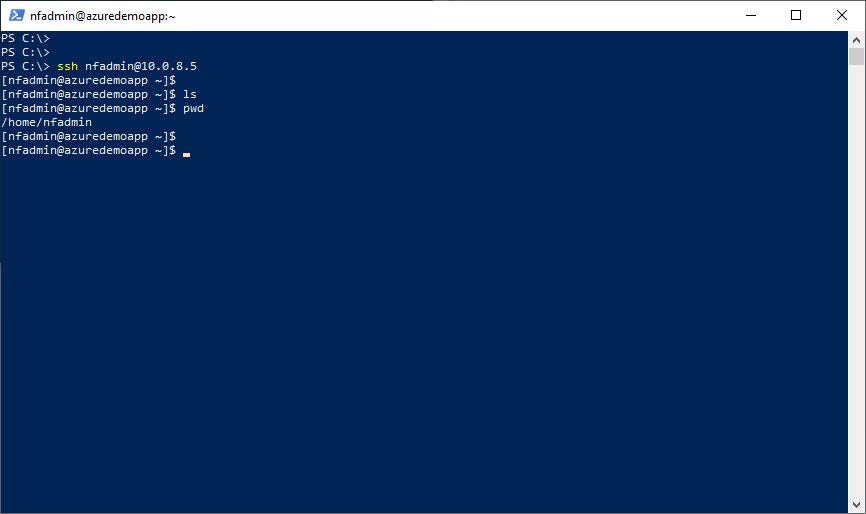
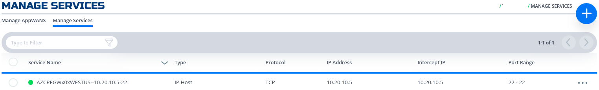
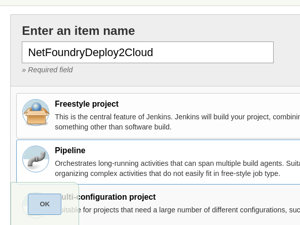
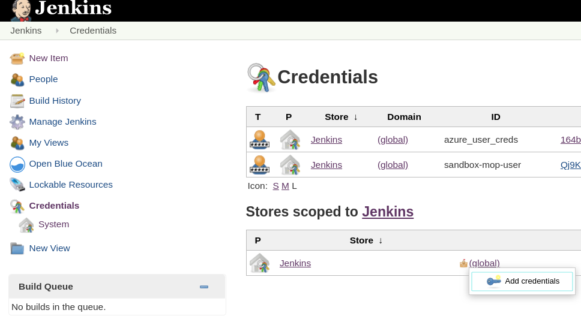
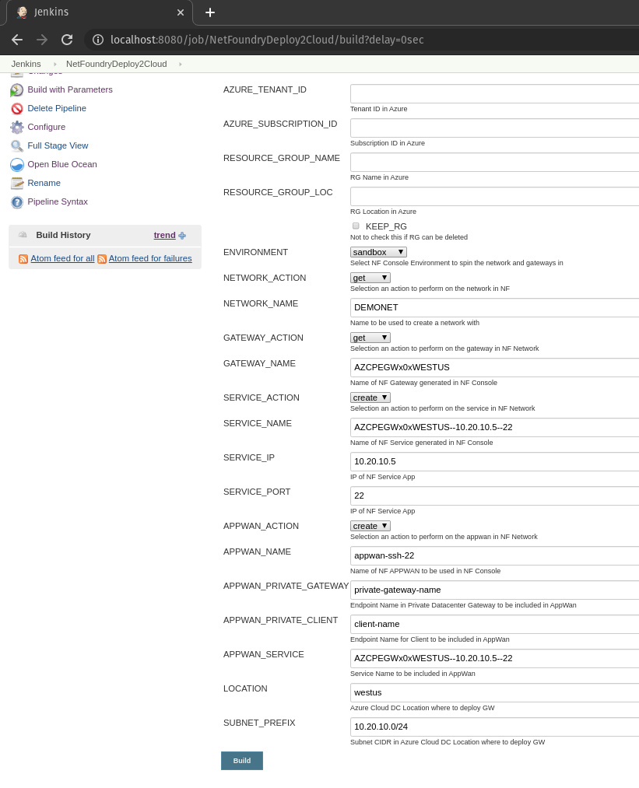

Branch Application To Cloud Application Connectivity
Overview@
This quickstart guide will provide all the steps to create a secure service between a branch application and/or user and an application hosted in Azure Cloud using NetFoundry Overlay Fabric (NFOF).
Important
Assumption is that the NF Fabric is already up.
Through NF Web Console UI@
Create and Deploy NF Gateway in Branch Datacenter@
This section will guide a user through the steps on how to create a NF Manage Gateway in the NF Console UI and install it in the Branch Datacenter.
Console UI
- Navigate to Manage Gateways Page
- Click on + sign in the top right corner.

- Click on "Create Gateway" on the VCPE Gateway Card

- Fill in the required information and click on "Create"

- Copy the Client Registration Key

- Click on "Download" button on the Installation Package Card

- Download the correct image for the desired Hypervisor.
- Follow the installation procedure linked in the description of each image type (i.e. "Click Here").
- Once installed, login into it locally with ssh and register it using the key copied in the previous step. Run the following command
sudo nfnreg "reg key"
- Once registered, one should see the gateway status turn to green in NF Console UI

- Done
Create and Deploy NF Azure Gateway@
This section will guide a user through the steps on how to create a NF Manage Gateway in the NF Console UI and install it in the Azure vNet.
Console UI
- Navigate to Manage Gateways Page
- Click on + sign in the top right corner.
- Click on "Create Gateway" on the Azure Cloud Gateway Card

- Fill in the required information and click on "Create"

- Copy the Client Registration Key

- Click on "Deploy to Microsoft Azure". It will take you to the Azure Portal and ask you for your login credentials.
- You will be presented with the template that needs to be filled. The first section is the Basics regarding your Subscription and Resource Group this gateway will be deployed in.

- The second section related to resources associated with this gateway. e.g. vm name, ip address space, security groups, etc. you will paste the registration key copied in step 5. You will also need the public ssh key to use for access to this gateway remotely.

- You will need to agree to Azure Marketplace Terms and Conditions and click to "Purchase" to continue.

- If the NF Gateway was deployed successfully. Here is the view of the Resource Group and NF Conole UI.


- Done
Create IP Host Service@
This section will guide a user through the steps on how to create a NF Service.
Console UI
- Navigate to Manage Services Page under Manage Appwans
- Click on + sign in the top right corner.

- Click on "Create an IP Host Service"

- Fill in the required information for SSH and click on "Create"

- If successfully, the service is green.

- Done
Create AppWan@
This section will guide a user through the steps on how to enable service connectivity to users by creating an appwan.
Console UI
- Navigate to Manage AppWANS Page under Manage Appwans
- Click on + sign in the top right corner.

- Click on "Component Builder Appwan"

- Move the desired gateway (e.g. DemoGateway01) from "Available" Gateways to "Selected" Endpoints. Move the desired service (e.g. DemoServiceSsh) from "Available" to "Selected" Services.

- Click on "Create".

- Done
Test Connectivity to Application Server@
Route to vNet
The private IP of NF Gateway (e.g. YourBranchGatewayName) needs to be the next hop to reach the vNet in Azure (e.g. 10.0.8.0/24). Thus, a static route will need to be configured in one of the branch routers. NF Gateway can support dynamic routing if needed (e.g.bgp, ospf)
Steps
- Log in to a Client App Host in Branch DataCenter
- Run ssh username@privateIpOfServerAppHostInAzure 
Programmatically@
via Python and Terraform@
Python Modules
For the code clarity, we have broken down the code into multiple Python modules
Environment Setup Requirements
-
~/.env to store NF Credentials in (e.g.
clientId, clientSecret) to obtain a session token for NF API -
Export Azure Credentials (e.g,
export ARM_TENANT_ID, ARM_CLIENT_ID, ARM_CLIENT_SECRET, ARM_SUBSCRIPTION_ID) to enable resource gateway creation in Azure Resource Group via Terraform. - Terraform and Python3 installed in path.
Additional Information:
- The new Resource Group in Azure is created based on then name provided in Resource yaml, if one does not exists already in the same region (e.g. centralus). The action delete gateway will delete the RG as well even if it was an existing RG. If one does not want to delete the RG, the command
terraform state rm "{tf resource name for RG}"needs to be run before running the gateway delete step. This will ensure that the RG is not deleted. - A new vNet will be created and NF Gateway will be placed in it.
- Environment means the NF Console Environment used (e.g. production), not Azure.
Steps
- Clone this repo (git clone https://github.com/netfoundry/mop.git)
- Update Resource yaml file with the desired options to feed into the wrapper script as described in the following code snippet. All Resource.yml Options
- Run this from the root folder to create GW in NF Console UI and Azure.
Required Configuration Parameters for Gateway Creation
python3 quickstarts/docs/api/python/source/netfoundry/nf_resources.py --file quickstarts/docs/api/python/etc/nf_resources.yml
environment: production network_action: get network_name: DemoNet01 gateway_list: - action: create cloud: azure count: 1 names: [] region: westus regionalCidr: [10.20.10.0/24] regkeys: [] resourceGroup: name: demoPythonTerraform01 region: centralus tag: TerraformDemo terraform: bin: terraform output: 'no' source: ./quickstarts/docs/terraform work_dir: .
- After the script is run successfully, one can see that the gateway name and registration key were saved in Resource.yml file. The name is created automatically based on region and gateway type joined with x and gateway count (AZCPEGW means an azure type gateway in NF console). One can create more than one gateway in the same region by increasing the count to more than 1.
environment: production gateway_list: - action: create cloud: azure count: 1 names: - AZCPEGWx0xWESTUS region: westus regionalCidr: - 10.20.10.0/24 regkeys: - 21DB86724EC3F31C11C1C9D68CE5ECD6A06F057E resourceGroup: name: demoPythonTerraform01 region: centralus tag: TerraformDemo network_action: get network_name: DemoNet01 terraform: bin: terraform output: 'no' source: ./quickstarts/docs/terraform work_dir: .


- Create a test server vm on the same vNet if not already present.

- Update the Resoure.yaml file to include the Service option to create the NF service on the gateway create in the previous step. Don't forget to change the action on the gateway to "get".
environment: production gateway_list: - action: get cloud: azure count: 1 names: - AZCPEGWx0xWESTUS region: westus regionalCidr: - 10.20.10.0/24 regkeys: - 21DB86724EC3F31C11C1C9D68CE5ECD6A06F057E resourceGroup: name: demoPythonTerraform01 region: centralus tag: TerraformDemo network_action: get network_name: DemoNet01 terraform: bin: terraform output: 'no' source: ./quickstarts/docs/terraform work_dir: . services: - action: create gateway: AZCPEGWx0xWESTUS ip: 10.20.10.5 port: 22 name: type: host
- After the script run again successfully, the service section should have been populated with the service name as so.

services: - action: create gateway: AZCPEGWx0xWESTUS ip: 10.20.10.5 name: AZCPEGWx0xWESTUS--10.20.10.5--22 port: 22 type: host
- Create a gateway in the branch as the steps in the UI section indicated.
We will provide code snippets for private hypervisors deployment through python in later releases (e.g. vSphere)
- Update the Resoure.yaml file to include the AppWan option to create the NF AppWan tying the gateway, client and service created in the previous steps. Don't forget to change the action on the service option to "get".
environment: production gateway_list: - action: get cloud: azure count: 1 names: - AZCPEGWx0xWESTUS region: westus regionalCidr: - 10.20.10.0/24 regkeys: - 21DB86724EC3F31C11C1C9D68CE5ECD6A06F057E resourceGroup: name: demoPythonTerraform01 region: centralus tag: TerraformDemo network_action: get network_name: DemoNet01 services: - action: get gateway: AZCPEGWx0xWESTUS ip: 10.20.10.5 name: AZCPEGWx0xWESTUS--10.20.10.5--22 port: 22 type: host terraform: bin: terraform output: 'no' source: ./quickstarts/docs/terraform work_dir: . appwans: - action: create endpoints: - BranchGatewayName - ClientName name: appwan-ssh-22 services: - AZCPEGWx0xWESTUS--10.20.10.5--22
- After the script ran again successfully, the connectivity should have been up.

- To test connectivity, log in to the Remote Client or Branch App Server and run ssh "username"@"privateIp"

- To delete resources created, just follow the reverse order. Change the action to delete for AppWans first, then other resources as indicated in the code snippets.
appwans: - action: delete endpoints: - BranchGatewayName - ClientName name: null services: - AZCPEGWx0xWESTUS--10.20.10.5--22
- Services
services: - action: delete gateway: AZCPEGWx0xWESTUS ip: 10.20.10.5 name: null port: 22 type: host
- Endpoints - will delete all resources in Azure as well.
terraform state rm "{tf resource name for RG}" // run this before the python script if Resource Group needs to be preserved1.gateway_list: - action: delete cloud: azure count: 1 names: [] region: westus regionalCidr: - 10.20.10.0/24 regkeys: [] resourceGroup: name: demoPythonTerraform01 region: centralus tag: TerraformDemo
- Network
environment: production network_action: delete network_name: DemoNet01
- Done
via Jenkins@
In this section, we will use Resource yaml along with Jenkinsfile to show how to automate the steps further by creating the Jenkins Job
Jenkins Requirements
Then follow jenkins installation using docker to install Jenkins on the localhost and choose "Install suggested plugins". After successful installation, one should be able to reach the Jenkins Dashboard (8080 is default port).

Note
If one wants to add the gateway deployed in the Private DataCenter and/or NF Client, it must be created prior to running the next steps. Otherwise the options of APPWAN_PRIVATE_GATEWAY and APPWAN_PRIVATE_CLIENT can be left blank and added after the appwan is created using the steps described in the Console UI section above. GATEWAY_NAME and SERVICE_NAME are automatically generated by the scripts in this version. GATEWAY_NAME = "GW TYPE"+x0x+"LOCATION OF AZURE GW", e.g. AZCPEGWx0xWESTUS; SERVICE_NAME = "GW NAME"--"SERVICE IP"--"SERVICE PORT", e.g. AZCPEGWx0xWESTUS--10.20.10.5--22.
Setting Up Jenkins Pipeline
- Login to Jenkins
- Click on " New Item"

- Name you Project, select pipeline option and click "Ok" 
- In the pipeline details, fill in the scm details as seen in the image below and click "Save".
Everything default apart from:
- Repository Url: https://github.com/netfoundry/mop.git
- Script Path: pipeline/netfoundrydeploy2cloud.jenkinsfile

- Set up users for Azure API and NF MOP API access -- More on Credentials setup 
- Run Jenkinsjob by selecting on the pipeline created in the previous step. Click on "Build with Parameters"

To create the resources
-
Fill in the Azure Details (e.g. RG, Tenant Id, etc) and select the following:
- NF Environment, e.g. production
- NETWORK_ACTION - create
- NETWORK_NAME, e.g. DEMONET
- GATEWAY_ACTION - create
- If Azure RG needs to be preserved, then KEEP_RG option must be left checked.
- LOCATION, e.g. westus - location where the Azure GW will be deployed in
- SUBNET_PREFIX, e.g. 10.20.10.0/24 - the subnet used for the vNet in the location of the Azure GW deployment.

-
Run Jenkins job again by selecting on the pipeline created in the previous step. Click on "Build with Parameters"
- Fill in service and appwan details by selecting the following:
- KEEP_RG - not selected
- NF Environment, e.g. production
- SERVICE_ACTION - create
- APPWAN_ACTION - create
- GATEWAY_NAME, e.g. AZCPEGWx0xWESTUS (this is created in the previous step automatically)
- SERVICE_NAME, e.g. AZCPEGWx0xWESTUS--10.20.10.5--22 (this is created automatically during this step)
- SERVICE_IP, e.g. 10.20.10.5
- SERVICE_PORT, e.g. 22
- APPWAN_NAME, e.g. appwan-ssh-22
- APPWAN_PRIVATE_GATEWAY, e.g. private-gateway-name (this is created outside of the jenkins job, prior to running this step)
- APPWAN_PRIVATE_CLIENT, e.g. client-name (this is created outside of the jenkins job, prior to running this step)
- APPWAN_SERVICE, e.g. AZCPEGWx0xWESTUS--10.20.10.5--22 
To delete the resources
- Run Jenkins job again by selecting on the pipeline created in the previous step. Click on "Build with Parameters"
-
Fill in the Azure Details (e.g. RG, Tenant Id, etc) and select the following:
- NF Environment, e.g. production
- NETWORK_ACTION - delete
- NETWORK_NAME, e.g. DEMONET
- GATEWAY_ACTION - delete
Pipeline View

-
Done